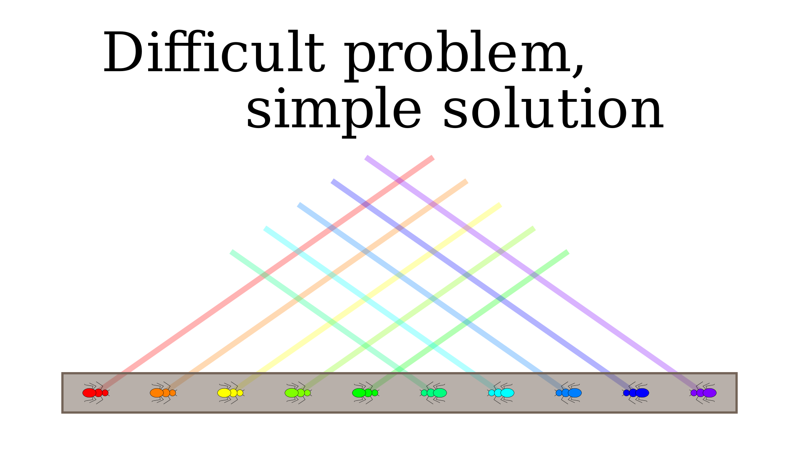
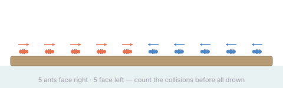
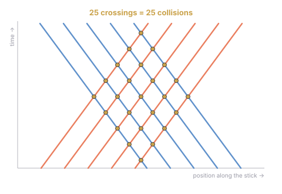

A puzzle about ants on a floating stick
Hi :) We're Nerdsniped and Nerdsniped, from the maths degree at the FME. We wanted to use this little corner to show you one of our favourite problems. We love it because it has a beautifully elegant solution that is genuinely hard to come up with — and yet, once you see it, almost embarrassingly easy to understand.
It's a problem with two solutions. The first is the one almost everybody finds: careful counting and a bit of school algebra. The second is the one worth waiting for — a single change of perspective that makes the whole thing collapse into one line, and cracks a much harder version of the problem for free.

1The riddle
There is a tree branch floating in a swimming pool. Standing on the branch, in a line, there are 10 ants. The 5 leftmost are looking right, and the 5 rightmost are looking left. In a moment they will all start walking, following three simple rules:
- Each ant walks in the direction it is facing, at the same constant speed.
- When two ants meet, they both turn around and walk the other way (a collision).
- If an ant walks off either end of the stick, it falls into the water and drowns.

The question is simple to state: how many ant-to-ant collisions happen in total before every ant has drowned?
This is a great moment to stop and try it yourself. If you'd rather watch us walk through it, here's the video — otherwise, scroll on for the two solutions.
2Solution 1 — count ant by ant
The most intuitive approach is to count, for each ant, how many collisions it personally takes part in, and add them up. There's one subtlety: every collision involves two ants, so summing each ant's personal count counts every collision twice. If $C$ is the total number of collisions and $c_i$ is the number for ant $i$, then
$$2C \;=\; \sum_{i=0}^{9} c_i.$$Now a useful observation: the starting position is perfectly symmetric, and the rules preserve that symmetry throughout the simulation. So the outermost-left ant has exactly as many collisions as the outermost-right one, the second-from-left as the second-from-right, and so on:
$$c_0 = c_9,\quad c_1 = c_8,\quad c_2 = c_7,\quad \dots$$which means the sum over all ten ants is just twice the sum over the five on one side. The two's cancel, and we're left with something clean:
$$C \;=\; \sum_{k=1}^{5} c_k \quad\text{(the five ants on one side).}$$The last step is to count those five. Walking inward from the edge:
- The 1st ant (nearest the edge) bounces once off its neighbour and then inevitably falls off the near edge: 1 collision.
- The 2nd bounces, but there's still an ant behind it, so it gets turned around and bounces a second and third time before it drops: 3.
- The pattern continues — the $k$-th ant from the edge bounces $2k-1$ times.
Adding up the five odd numbers gives the answer:
$$C \;=\; 1 + 3 + 5 + 7 + 9 \;=\; 25.$$So far so good. But this solution has a real weakness. What if there are more ants on one side than the other? Then the symmetry is broken, the per-ant counts stop being a tidy run of odd numbers, and the whole bookkeeping falls apart. Solution 1 simply can't handle it. (Pause here and try the asymmetric case — it's genuinely fiddly.)
3Solution 2 — let them be ghosts
Here is the change of perspective. When two ants collide, they turn around. But the ants are indistinguishable — every ant counts towards the total in exactly the same way. So when ant A and ant B meet and bounce, the picture is identical to one where they simply pass straight through each other, like ghosts, and keep going. The number of collisions doesn't change one bit; only the labels on the ants do.
Once you allow the ants to walk through each other, every trajectory becomes a straight line that never turns. Draw the picture in space and time — position across, time up — and each ant traces a perfectly straight world-line. A collision is exactly a point where two of these lines cross.

Now the counting is trivial. Two ants only ever cross if they're walking towards each other — two ants going the same way are parallel and never meet. So if $a$ ants are walking right and $b$ ants are walking left, then every right-walker crosses every left-walker exactly once, and the total number of collisions is simply
$$C \;=\; a \cdot b.$$For our puzzle, $a = b = 5$, giving $5 \cdot 5 = 25$ — matching solution 1. But look what we got for free: the asymmetric case that defeated solution 1 is now immediate. Three ants heading right into seven heading left? $3 \cdot 7 = 21$ collisions. No casework, no symmetry, no sum of odd numbers — just one product.
4Why we love this one
The first solution is honest work: it gets the right answer, and the $n^2$ pattern is a nice surprise. But it's tied to the symmetry of the setup, and it tells you what the answer is without really telling you why.
The second solution is the kind of idea that makes you grin. A single observation — the ants are interchangeable, so let them pass through each other — dissolves all the bouncing complexity into a grid of straight lines, turns "collisions" into "crossings", and hands you a more general answer than the one you were even asking for. That's the whole joy of a good puzzle: not the number at the end, but the moment the hard thing quietly becomes easy.
Thanks for reading. We hope you enjoyed it as much as we do. — Nerdsniped & Nerdsniped